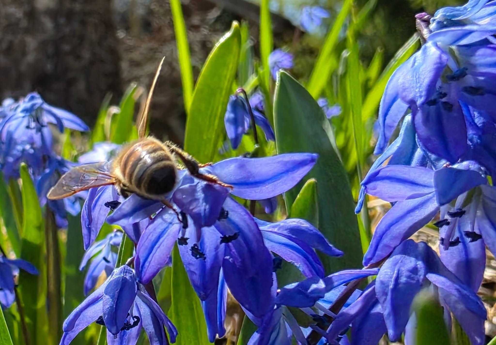
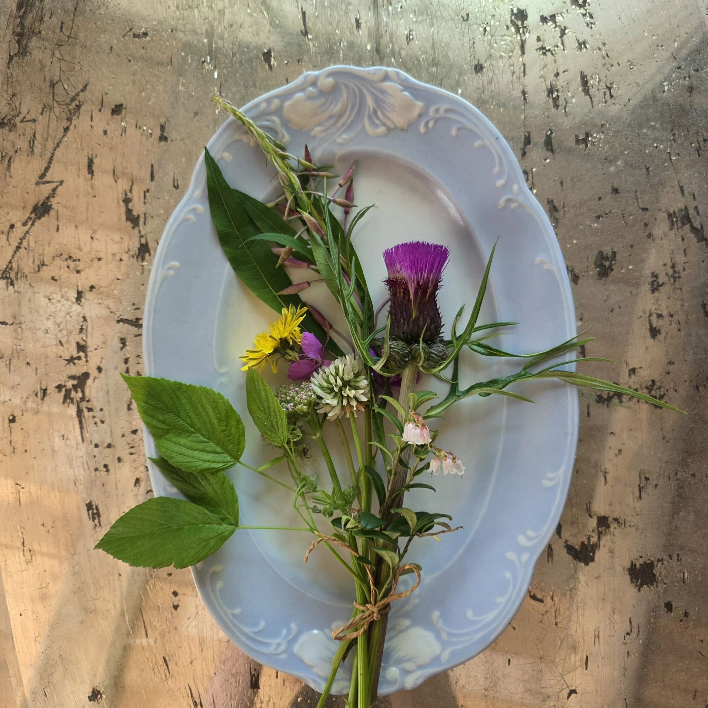

Kuva tulossaHunajamme
Monikukkahunajaa, sellaisena kuin kesä sen antaa
Tuotteemme
Laadukas monikukkahunaja
Hunajamme on peräisin Jalasjärven Keskikylän pelloilta ja niityiltä, joilla mehiläisemme saavat kerätä mettä vapaasti läpi koko kesän. Lopputulos on täyteläinen monikukkahunaja, jonka sävy ja maku vaihtelevat hieman kesästä toiseen sen mukaan, mikä on kukkinut parhaiten.
Hunaja lingotaan ja pakataan omalla tilallamme, ilman lisäaineita tai turhia välikäsiä.
Nauti hunajasta
Muutama tapa nauttia luonnollisesta hunajasta
Aamupalalla
Puuron, leivän tai jogurtin päällä hunaja tuo mukavan makeuden ilman keinotekoisia lisäaineita.
Teen kanssa
Lusikallinen lämpimässä teessä tai juomassa tuo esiin hunajan oman, kesäisen maun.
Leivonnassa
Hunaja sopii mainiosti leivonnaisiin ja marinadeihin, ja tuo mukanaan aidon, luonnollisen makeuden.

Kuva tulossaMistä hunajaamme saa
Suoraan tilalta tai lähikaupasta
Myymme hunajaa suoraan tilaltamme sopimuksen mukaan, ja toimitamme sitä myös lähialueen kauppoihin. Ota yhteyttä, niin kerromme mistä hunajaamme kulloinkin löytyy.
- Nouto suoraan tilalta, Mantila
- Toimitusta lähialueen kauppoihin
- Sovi ajankohta puhelimitse tai lomakkeella